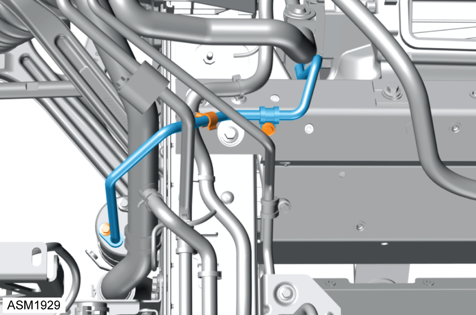
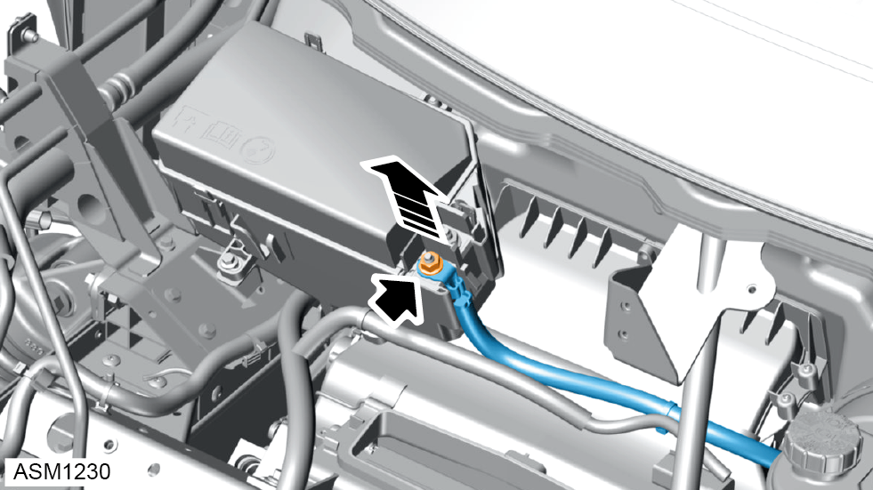

Heater / Air Conditioning Housing Assembly - LHD - 4 Cylinder
Print
Operation Code: 18.01.01-02
Removal
- Depressurise air conditioning system. Refer to procedure.
- Disconnect battery. Refer to procedure.
- Drain coolant. Refer to procedure.
- Remove front fender left side. Refer to procedure.
- Remove front fender right side.
NOTE: Procedure is the same as for left side component.
- Remove pollen filter. Refer to procedure.
- Remove cooling fan. Refer to procedure.
- Remove PAS pump motor. Refer to procedure.
- If fitted, remove water shield from HVAC unit. Refer to TSB-131-24007.
- Remove scrivets (x6) securing centre radiator duct to front subframe.
- Remove centre radiator duct.
- Release clips (x2) securing pipes (x2) to PAS fluid reservoir.
- Disconnect pipes (x2) from PAS fluid reservoir.
- Release PAS fluid reservoir from clip on bracket.
- Remove PAS fluid reservoir.
- Remove M5x13 self tapping screws (x2) securing external filter housing to HVAC unit.
- Release clips (x4) securing external filter housing to HVAC unit.
 CAUTION: Tabs are fragile, take care when releasing external filter housing.
CAUTION: Tabs are fragile, take care when releasing external filter housing.
- Remove external filter housing.
- Remove M6x16 bolt securing air conditioning pipe clamp plate to expansion valve. Torque 9 Nm.
- Remove air conditioning clamp plate.
- Disconnect air conditioning pipe from expansion valve.
NOTE: Cap pipe and expansion valve port to prevent ingress of dirt and moisture.
- Remove M6x20 bolt from air conditioning pipe. Torque 10 Nm.
- Disconnect air conditioning pipe from fitting.
NOTE: Cap pipe and fitting to prevent ingress of dirt and moisture.

- Remove M6x20 bolts (x2) securing air conditioning pipe to receiver dryer and front subframe. Torque 10 Nm.
- Release clip from air conditioning pipe.
- Disconnect air conditioning pipe from receiver dryer.
NOTE: Cap pipe and receiver dryer port to prevent ingress of dirt and moisture.
- Disconnect air conditioning pipe from expansion valve.
NOTE: Cap pipe and expansion valve port to prevent ingress of dirt and moisture.
- Remove M6x20 bolts (x3) securing brackets (x2) to front subframe. Torque 8 Nm.
- Remove M6 nut securing bracket to front subframe. Torque 8 Nm.
- Remove brackets (x2).
- Rotate disconnected air conditioning pipe and move aside.
- Remove fusebox cover.

- Remove M8 nut securing battery cable to fusebox. Torque 24 Nm.
- Remove battery cables and move aside.
- Release clips (x4) securing front end harness to fusebox and front subframe.
- Remove M6x16 bolts (x2) securing fusebox and bracket to front subframe.
- Move fusebox and harnesses aside.
- Disconnect harness connector from HVAC unit.
- Release clips (x2) securing harness to window wiper mounting and HVAC unit bracket.
- Remove harness from mounting and move aside.
- Remove M6x20 bolts (x2) securing recirculation pump to intermediate crossmember. Torque 10 Nm.
- Move recirculation pump aside.
- Remove M6x20 bolts (x3) and M6x30 bolt securing wiper motor support bracket/bar to vehicle.
- Remove wiper motor support bracket/bar.
- Remove M8x20 bolts (x2) and washers securing HVAC unit to intermediate crossmember. Torque 9 Nm.
NOTE: Always record quantity and fitted position of washers.
- Release clips (x2) securing harness to front subframe.
- Remove M6x20 bolt securing power steering pipe to front crossmember. Torque 9 Nm.
- Remove M6x20 bolt securing air conditioning pipe to front subframe. Torque 10 Nm.
- Slightly loosen power steering pipe union and rotate pipe to allow pipe to pass through intermediate crossmember. Torque 45 Nm.
NOTE: Do not break into the power steering system.
- Remove M8x25 bolts (x2) securing fender bracket to front subframe.
- Remove fender bracket.
- Remove M6x19 Torx bolts (x2) securing intermediate crossmember to front subframe.
- Remove M8x25 bolts (x2) securing intermediate crossmember to front subframe. Torque 24 Nm.
- Remove M6 nut securing earth point to front subframe. Torque 10 Nm.
- Release clip and remove earth point from front subframe.
- Remove M6x16 bolt securing coolant pipe to front subframe. Torque 10 Nm.
- Remove M6x30 bolt securing coolant pipes. Torque 10 Nm.
- Release clamp and disconnect coolant hose.
- Remove M6x16 bolt securing coolant pipe to bracket. Torque 10 Nm.
- Remove M6x16 bolt securing coolant pipe to intermediate crossmember. Torque 10 Nm.
- Remove M8x25 bolts (x2) securing fender bracket to front subframe.
- Remove fender bracket.
- Remove M6x19 Torx bolts (x2) securing intermediate crossmember to front subframe.
- Remove M8x25 bolts (x2) securing intermediate crossmember to front subframe. Torque 24 Nm.
- Remove M6x20 bolts (x6) securing intermediate crossmember to front subframe. Torque 8 Nm.
- Remove M6x20 bolts (x5) securing intermediate crossmember to front subframe. Torque 8 Nm.
- Lift intermediate crossmember over earth studs on left and right side of front subframe.
- Move intermediate crossmember forward approximately 144 mm to gain clearance for HVAC unit.
- Remove M10x30 bolt securing HVAC unit to front subframe. Torque 45 Nm.
- Release clip securing instrument panel air duct hose to HVAC unit.
- Disconnect instrument panel air duct hose.
- Remove M8x16 bolt securing HVAC unit to bulkhead. Torque 9 Nm.
- Release hose clamps (x2) securing heater feed and heater return hoses to HVAC unit.
NOTE: Record positions of feed and return hoses.
- Disconnect heater feed and return hoses and install clamps to minimise coolant loss.
NOTE: Use a suitable container to catch coolant.
- Release clips (x4) securing transition duct to HVAC unit.
- Remove transition duct.
- Using assistance remove HVAC unit.
Installation
- Installation is the reverse of removal procedure except for the following:
- Renew discarded O rings.
- With AC compressor fitted, perform the following running in procedure:
 WARNING: The running in procedure described below must be performed so that refrigerant oil does not exit the compressor sump and flow directly into the air conditioning hoses/pipes before first circulating around the compressor, this ensures the compressors internal components are fully lubricated.
WARNING: The running in procedure described below must be performed so that refrigerant oil does not exit the compressor sump and flow directly into the air conditioning hoses/pipes before first circulating around the compressor, this ensures the compressors internal components are fully lubricated.
- Start engine.
- Turn on air conditioning to maximum cold setting.
- Allow engine to idle for 2 minutes while monitoring performance.
- Check for any leaks of AC refrigerant or oil.
- Fill power steering system. Refer to technical data.
- Bleed power steering system. Refer to procedure.